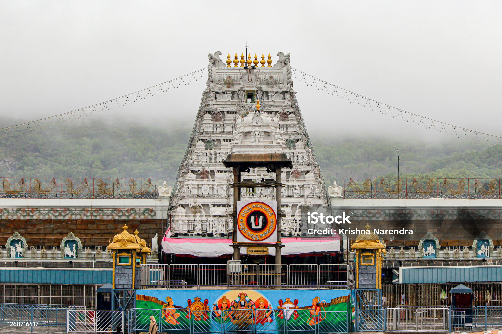
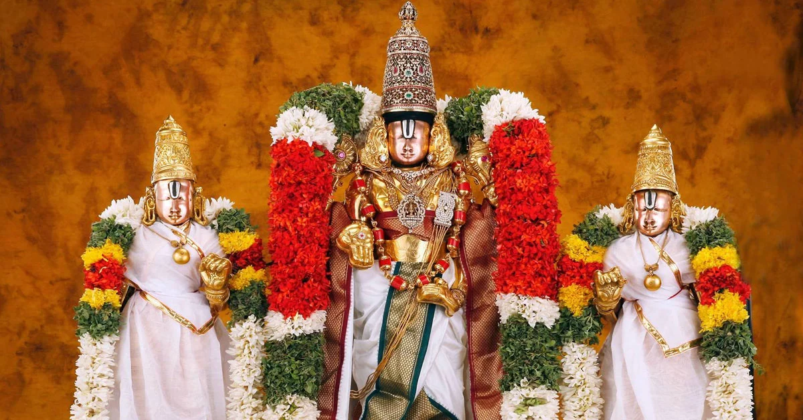
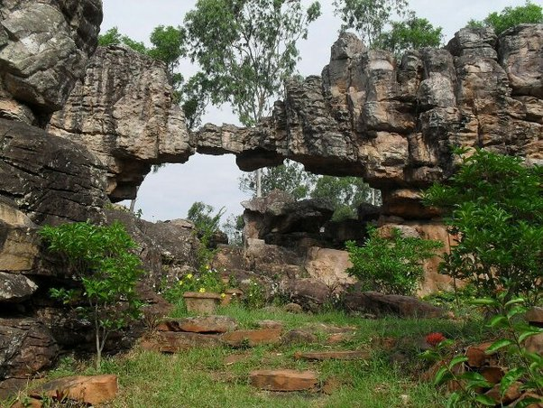
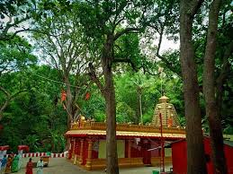

Tirupathi
- The Tirupathi is one of the femous visting place
- This is a devtional place lord venkateswara is TTD
- The control of TTD is our chairman and EO
- The present TTD chairman is bhumana karunakar reddy
- To visit the place is very beautiful place
- The TTD is very largest and famous temple in Andhra Pradesh
- The distict of tirupathi is chitoor
- The one of the town in Andhra pradesh
- To visting the tirupathi in bus to stop out RTC bus stop
The Tirupathi is one of the femous visting place
This is a devtional place lord venkateswara is TTD
The control of TTD is our chairman and EO
The present TTD chairman is bhumana karunakar reddy
To visit the place is very beautiful place
The present TTD chairman is bhumana karunakar reddy
To visit the place is very beautiful place
The present TTD chairman is bhumana karunakar reddy


The TTD is very largest and famous temple in Andhra Pradesh
The distict of tirupathi is chitoor
The one of the town in Andhra pradesh
To visting the tirupathi in bus to stop out RTC bus stop
It's airport also avalible for flights in renigunta
To darshan to venkateswara going to tirumala
To route of tirumala is bus and walk route alipiri steps and srivari steps
Darshan of venkateswara swamy to various type darshans are avalible
The visiting places of tirumala papavinasanam,Japali teerdam
akasa ganga,silatoranam,srivaripadalu and chakra teerdam
To food also free food sadan avalible on devastanam
All tirumala is free buses are avalible
The prasadam of TTD is Laddu and vada


To route of tirumala is bus and walk route alipiri steps and srivari steps
Darshan of venkateswara swamy to various type darshans are avalible
The visiting places of tirumala papavinasanam,Japali teerdam
akasa ganga,silatoranam,srivaripadalu and chakra teerdam
To food also free food sadan avalible on devastanam
All tirumala is free buses are avalible
The prasadam of TTD is Laddu and vada